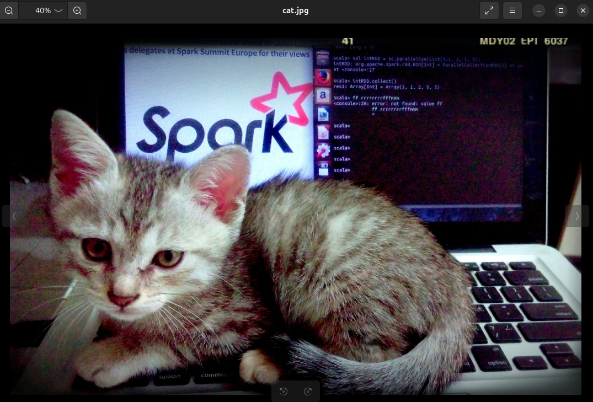
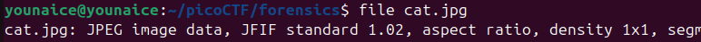
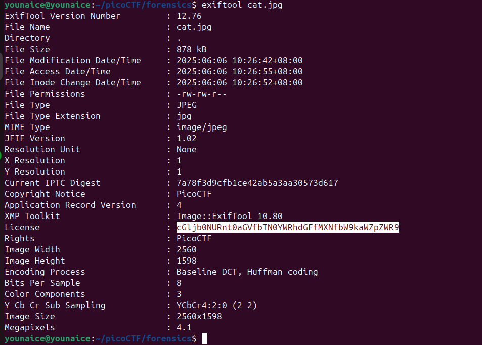
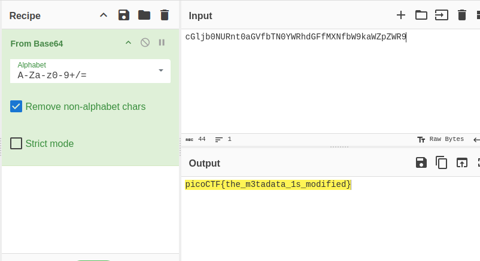

Challenge Description
Files can always be changed in a secret way. Can you find the flag? cat.jpg
Writeup Steps
-
Awwwww cute cat given from the question.

-
First, check the file type

Yes, it's an image
-
Then check the image with exiftool to get its metadata. Well, I saw something familiar, the flag format :
cGljb0NUR. I guess i found it.Although there's no == at the end of the strings, but ya, i will bake it
-
Yes, it's the flag

Flag
picoCTF{the_m3tadata_1s_modified}